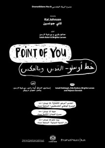

Internasjonale samarbeid: Saleh Bakri, Birgitte Larsen og Kai Johnsen - Point of you
- Dato:
- 14.10.2013 til 14.10.2013
- Start kl :
- 19:00
- Slutt kl :
- 21:30
- Adresse:
- Norsk Skuespillersenter, Welhavensgate 1, Oslo
 Samtalen om Point of you er flyttet, og legges nå i etterkant av forestillingen på Nationaltheatret den 14. oktober. Billetter til forestillingen må kjøpes via www.nationaltheatret.no.
{kind=link}
Forestillingen Point of you er resultatet av et norsk/palestinsk samarbeidsprosjekt mellom Al Ruwah Theatre i Øst-Jerusalem, Dramatikkens hus og Nationaltheatret i Oslo. Stykket er laget gjennom to års tekstutvikling og utveksling mellom Norge og Palestina.
Skuespillerne Saleh Bakri og Birgitte Larsen samt regissør Kai Johnsen kommer til Skuespillersenteret for å fortelle om samarbeidet. Hvilke utfordringer har de møtt på? Politiske, praktiske, sosiale og kulturelle? Hva slags utbytte norske og palestinske deltakere av prosjektet? Hvordan fungerer et samarbeid mellom to skuespillere som kommer fra to så forskjellige verdener?
Samtalen ledes av journalist og skuespiller Tove Kampestuen Heyerdahl.
Om stykket
Dramatiker og skuespiller Ismail Dabbagh har sammen med poet Najwan Darwish, skuespiller Birgitte Larsen og dramaturg og dramatiker Oda Radoor skrevet en teatertekst om to kulturer som er tiltrukket og frastøtt av hverandre. Forestillingen fremstår som et trespråklig møte i flere mulige stadier mellom en norsk kvinne på vei til Jerusalem og en palestinsk mann på vei ut av eller til Norge. Point of you setter i spill ulike spenningspunkter i dette tenkte og reelle møtet.
Palestinske og norske kunstnere
Forestillingen spilles av den kjente palestinske filmskuespilleren Saleh Bakri og Nationaltheatrets Birgitte Larsen. Regien er ved Kai Johnsen, bl.a. kjent for sitt langvarige samarbeid med Jon Fosse.
Etter Norgespremieren i Dale vil forestillingen bli spilt på Nationaltheatret i Oslo den 14. og 15. oktober. Forestillingen hadde urpremiere i Jerusalem i april, og er også blitt spilt ved teatre i Haifa og Betlehem. Prosjektet er finansiert av Dramatikkens hus, Utenriksdepartementet og Nationaltheatret. Forestillingen er produsert av Najwan Darwish og Marit Grimstad Eggen.
{kind=link}
{kind=link}